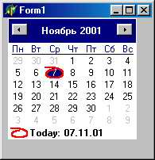

TTabControl - набор закладок
Компонент TTabControl представляет собой контейнер с закладками. Свойство Tabs определяет названия и количество закладок. Событие onchange. возникает при выборе новой закладки и позволяет управлять содержимым окна компонента. Для примера на рис. 18.22 показано использование компонента для управления календарем (с помощью TTabControl созданы закладки с названиями месяцев).
Свойства компонента:
|
property DisplayRect: TRect; |
Определяет рабочую зону компонента, предназначенную для размещения других компонентов. Клиентская часть компонента содержит зону закладок и рабочую зону |
|
property HotTrack: Boolean; |
Если содержит True, название закладки автоматически выделяется цветом при перемещении над ней указателя мыши |
|
property Images: TCustomImageList; |
Определяет объект - хранилище изображений, которые будут прорисовываться слева от текста |
|
property Multi-Line: Boolean; |
Разрешает расположение закладок в несколько рядов. Если содержит False и закладки не умещаются в границах компонента, в зону закладок автоматически вставляются кнопки прокрутки |
|
property OwnerDraw: Boolean; |
Разрешает программную прорисовку закладок |
|
property ScrollOpposite: Boolean; |
Разрешает/запрещает перемещение неактивных рядов закладок на противоположную сторону компонента. Учитывается, если количество рядов больше 2 |
|
type TTabStyle = (tsTabs, tsButtons, tsFlatButtons) ; property Style: TTabStyle; |
Определяет стиль закладок: tsTabs - обычные надписи; tsButtons -трехмерные кнопки; tsFlat Buttons - плоские кнопки |
|
property TabHeight: Smallint; |
Определяет высоту каждой закладки в пикселях. Если содержит 0, высота закладок выбирается автоматически в зависимости от выбранного шрифта |
|
property Tablndex: Integer; |
Определяет индекс выбранной закладки или содержит -1, если ни одна закладка не выбрана. Индексация начинается с 0 |
|
TTabPosition = (tpTop, tpBottom) ; property TabPosition: TTab Position; |
Определяет положение зоны закладок относительно рабочей зоны компонента (tpTop - вверху, tpBottom - ВНИЗУ) |
|
property Tabs: TStrings; |
Определяет надписи на закладках и их количество. Чтобы добавить или удалить закладку, нужно добавить ее надпись к списку Tabs или удалить надпись из списка |
|
property TabWidth: Smallint; |
Определяет ширину каждой закладки в пикселях. Если содержит 0, ширина каждой закладки выбирается индивидуально в зависимости от длины ее надписи |

Рис. 18.22. Управление календарем с помощью TTabControl
Помимо события OnChange, возникающего после выбора новой закладки, для компонента определено также событие OnChanging, которое возникает перед сменой закладки:
type TTabChangingEvent =
procedure (Sender: TObject;
var AllowChange: Boolean) of object;
property OnChanging: TTabChangingEvent;
Обработчик события может запретить выбор закладки, вернув в параметре Alliowchange значение False.
TPageControl - набор страниц с закладками
Компонент TPageControl в отличие от TTabControl может содержать несколько перекрывающих друг друга панелей класса TTabSheet. Каждая панель выбирается связанной с ней закладкой и может содержать свой набор помещенных на нее компонентов.
Чтобы на этапе конструирования добавить новую панель или выбрать ранее вставленную, щелкните по компоненту правой кнопкой мыши и выберите New page (новая панель), Next page (следующая панель) или previous page (предыдущая панель). Смена панелей идет циклически, т. е. после показа последней показывается первая и наоборот.
Помимо свойств HotTrack, MultiLine, ScrollOpposite, TabHeight, TabPosition и TabWidth, которые аналогичны одноименным свойствам TTabcontrol, компонент имеет следующие специфичные свойства:
|
property ActivePage: TTabSheet; |
Содержит ссылку на активную панель. Установка нового значения ActivePage размещает соответствующую панель поверх остальных. Для выбора новой панели следует использовать методы SelectNextPage и FindNextPage |
|
property ActivePageIndex: Integer; |
Содержит индекс активной панели |
|
property PageCount: Integers; |
Содержит количество панелей (только для чтения) |
|
property Pages[Index: Integer] : TTabSheet; |
Возвращает ссылку на панель по ее индексу (только для чтения) |
Методы компонента:
|
function FindNextPage (CurPage: TTabSheet; GoForward, CheckTabVisible: Boolean) : TTabSheet; |
Ищет следующую панель: CurPage - текущая панель; GoForward - содержит True, если поиск идет от первой панели к последней; CheckTabVisible -содержит True, если из поиска исключаются панели с признаком Tabvisible=False. Возвращает ссылку на найденную панель. Если CurPage не принадлежит компоненту, возвращает ссылку на первую или последнюю панель в зависимости от параметра GoForward |
|
procedure SelectNextPage (GoForward: Boolean); |
Делает активной следующую панель. Если GoForward=True, активизируется следующая панели, в противном случае - предыдущая |
TTabSet - набор закладок
Компонент TTabSet представляет собой набор закладок. В отличие от компонента TTabControl он не может служить контейнером для размещения других компонентов и поэтому обычно работает совместно с каким-либо компонентом-контейнером (чаще всего - с TNotebook).
Свойства компонента:
|
property AutoScroll: Boolean; |
Разрешает/запрещает появление стрелок прокрутки, если закладки не умещаются целиком в границах компонента |
|
property BackgroundColor: TColor; |
Определяет цвет фона закладок |
|
property DitherBackground: Boolean; |
Если содержит True, уменьшается насыщенность цвета BackgroundColor |
|
property EndMargin: Integer; |
Отступ закладок от правой границы компонента |
|
property Firstlndex: Integer; |
Содержит индекс самой левой закладки, целиком видимой на экране |
|
property SelectedColor: TColor; |
Содержит цвет выбранной закладки (обычно совпадает с цветом связанного компонента-контейнера) |
|
property StartMargin: Integer; TTabStyle = (tsStandard, tsOwnerDraw); |
Отступ закладок от левой границы компонента |
|
property Style: TTabStyle; |
Определяет способ прорисовки закладок: tsStandard - автоматический; tsOwnerDraw - программный |
|
property TabHeight: Integer, |
Определяет высоту закладок в пикселях |
|
property Tablndex: Integer; |
Содержит индекс выбранной закладки (индексация начинается с 0) |
|
property UnselectedColor: TColor; |
Определяет цвет невыбранных закладок |
|
property VisibleTabs: Integer; |
Содержит количество закладок, целиком видимых в границах компонента |
|
Методы компонента: |
|
|
function ItemAtPos(Pos: TPoint): Integer; |
Возвращает индекс закладки, которой принадлежит точка Pos |
|
function ItemRect(Item: Integer): TRect; |
Возвращает прямоугольник прорисовки закладки с индексом item |
|
procedure SelectNext(Direction: Boolean) ; |
Смещает выбор к соседней закладке: Direction - направление смещения (True - вправо) |
|
Для компонента определены следующие события: |
|
|
TTabChangEvent = procedure (Sender: TObject; NewTab: Integer; var AllowChange: Boolean) of object; |
Возникает перед сменой выбранной закладки: NewTab - индекс закладки, которая будет выбрана. В параметре AllowChange обработчик должен разрешить или запретить выбор закладки |
|
property OnChange: TTabChangingEvent; TDrawTabEvent = procedure(Sender: TObject; TabCanvas: TCanvas; R: TRect; Index: Integer; Selected: Boolean) of object; |
Возникает при необходимости прорисовать закладку с индексом index, если она имеет стиль tsOwnerDraw: TabCanvas - канва для прорисовки; Selected - содержит True для выбранной закладки |
|
property OnDrawTab: TDrawTabEvent; TMeasureTabEvent = procedure(Sender: TObject; Index: Integer; var TabWidth: Integer) of object-property OnMeasureTab: TMeasureTabEvent; |
Возникает перед прорисовкой закладки с индексом index, если она имеет стиль tsOwnerDraw. В параметре TabWidth обработчик должен вернуть ширину закладки |
Как уже говорилось, часто компонент TTabSet связывается с компонентом TNotebook для организации многостраничного блокнота с закладками. В этом случае в обработчике событий OnChange или
OnClick компонента следует предусмотреть изменение текущей страницы блокнота. Например:
procedure TFormI.TabSetlChange(Sender: TObject;
NewTab: Integer;
var AllowChange: Boolean);
begin
AllowChange := True; // Разрешаем смену закладки
Notebookl.Pagelndex := NewTab // Меняем страницу блокнота
end;
TNotebook - набор страниц
Многостраничный контейнер TNotebook обычно работает в паре с TTabSet и предназначен для размещения других компонентов на нескольких перекрывающих друг друга страницах (панелях).
Свойства компонента:
|
property ActivePage: Strings; |
Определяет имя верхней страницы блокнота |
|
property Pagelndex: Integers; |
Содержит индекс верхней страницы блокнота |
|
property Pages: TStrings; |
Содержит набор строк с именами страниц |
Ключевым свойством является Pages. С помощью его методов Add, Delete, Find и т. д. можно добавлять и удалять страницы, отыскивать Нужную и т. д. (см. класс TStrings).
Для компонента определено событие
property OnChange: TNotifyEvent;
которое возникает при смене страницы.
TTabbedNotebook - набор страниц с закладками
Компонент TTabbedNotebook представляет собой объединение TTabSet и TNotebook в готовый многостраничный блокнот с заклад-ками. В отличие от TTabSet закладки в TabbedNotebook могут располагаться в несколько рядов.
Свойства ActivePage, Pagelndex И Pages компонента совпадают c одноименными свойствами компонента TNotebook. Свойство property TabsPerRow: Integer; определяет количество закладок в одном ряду.
С помощью метода function GetIndexForPage(const PageName: String): Integer; программа может получить индекс страницы по ее имени PageName.